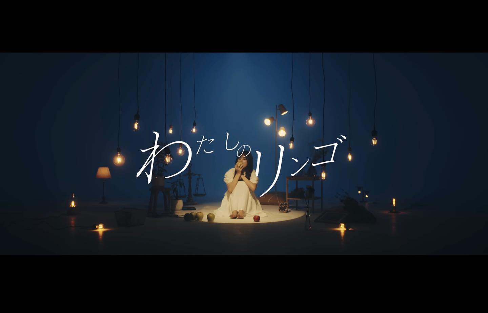
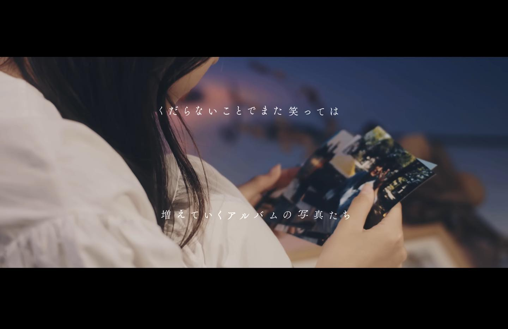
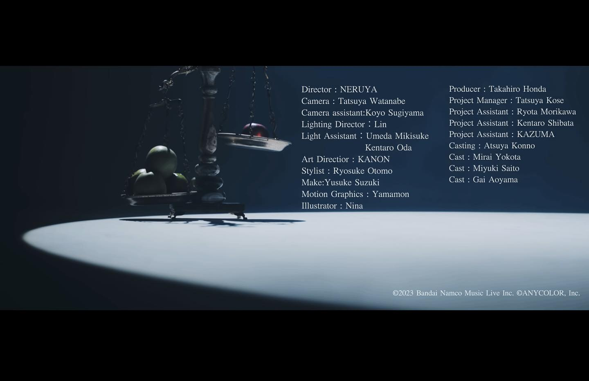
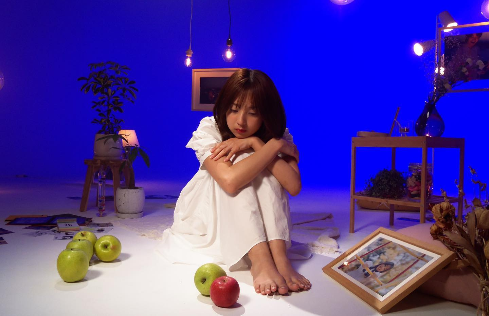
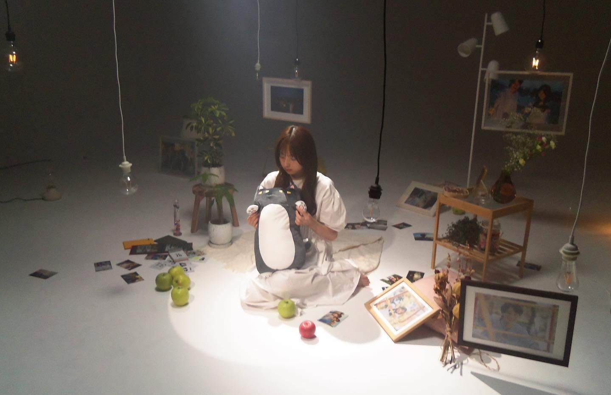
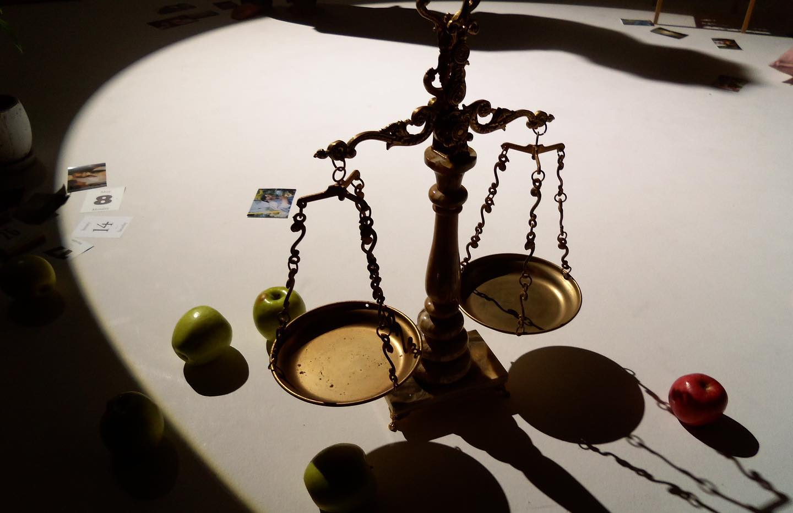

PRODUCTION STAFF / PHOTO
叶 「わたしのリンゴ」Music video






.
【works】
叶 「わたしのリンゴ」Music video
現場制作並びに一部劇用写真撮影・オフショット担当として参加させて頂きました。
ーーーーー
credit
Director: ねる屋。
Camera : Tatsuya Watanabe
Camera assistant : Koyo Sugiyama
Lighting Director : Lin
Light Assistant : Umeda Mikisuke, Kentaro Oda
Art Directior : KANON
Motion Graphics: やまもん
the illustrator: にーな
Stvlist : Rvosuke Otomo
Make:Yusuke Suzuki
Producer: Takahiro Honda
Project Manager: Tatsuva Kose
Project Assistant: Ryota Morikawa, Kentaro Shibata, KAZUMA
Casting : Atsuya Konno
Cast:横田未来
Cast:齋藤美雪
Cast: 青山凱